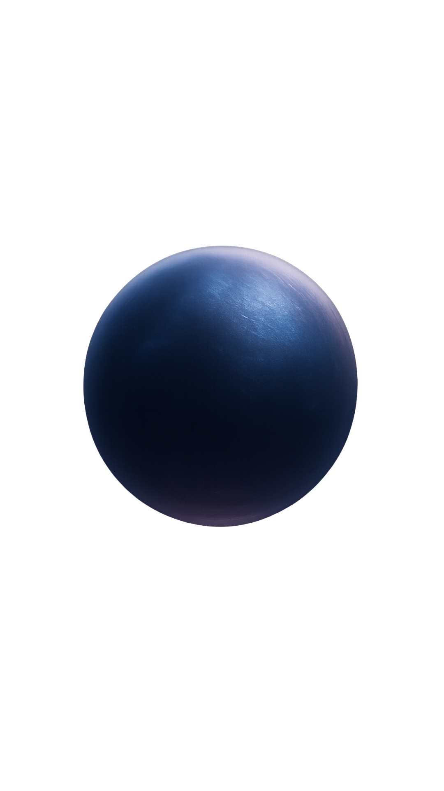

Download on iOS
Download on iOS
 Get it on Android
Get it on Android
I — Outer Sanctum
The stillpoint. The breath before awakening.

Not content. Not self-improvement. A practice that descends. Some doors only open from within.
A guided audio experience for deep rest, lucid awareness, and inner exploration.
Built as a ritual, not a feed.
Now available on iOS and Android.
Start with Chamber I — Outer Sanctum.
Headphones recommended.
Repeat sessions are part of the design.
Chambers
Begin with the first three Chambers. Return as often as needed. New chambers will continue to open over time.
The stillpoint. The breath before awakening.
The spark that burns away illusion.
The crossing beyond self.
More chambers will appear as doors — not as noise.
Sound is not decoration—it’s a way to sonically play the nervous system. The brain is rhythmic by nature. Breath, heart rate, attention, and even perception respond to patterns. A Chamber is built as a controlled sonic environment: a blend of spatial cues, harmonic tension and release, and subtle pulse structures designed to guide the listener toward coherence. With repetition, the system learns the shape of the Chamber—like returning to a familiar path through a forest—so less energy is spent orienting, and more becomes available for dropping beneath thought.
The efficacy of Chambers isn’t mystical—it’s physiological. Sound can entrain attention and influence arousal through well‑understood mechanisms: steady modulation, low‑frequency rhythmic energy, and spatial continuity help reduce vigilance in the nervous system. When the mind stops scanning for novelty, the body receives permission to downshift. This is why Chambers are designed for repetition. Early sessions often calm the system. Later sessions can shift perception—because the brain begins to associate the Chamber’s sonic signature with safety, stillness, and depth, making entry into those states faster and more reliable over time.
Most audio is designed to entertain. Chambers are designed to condition. When stimuli constantly change, the brain remains in evaluation mode—comparing, judging, staying subtly alert. Returning to the same Chamber removes that novelty tax. The auditory system stops analyzing and begins entraining. This is when deeper effects emerge: slower breath, softer muscle tone, reduced mental chatter, and occasionally the appearance of hypnagogic imagery or lucid‑like awareness. The Chamber isn’t “doing something” to you—it’s creating the conditions where your nervous system does what it already knows how to do: regulate, open, and reorganize.
Chambers are built in three dimensions. Spatial sound isn’t a gimmick—it’s a perceptual anchor. When audio has depth and placement, the brain treats it less like a track and more like an environment. And environments change behavior. A coherent sonic space reduces cognitive drift and increases the sense of presence—one of the strongest predictors of whether someone actually settles into a restorative state. In practical terms, spatial continuity helps you stay with the experience long enough for it to work.
Chambers are not a medical claim, and they are not a shortcut to enlightenment. What they can do—reliably—is guide the listener into states associated with recovery and insight: downshifting stress arousal, stabilizing attention, improving breath‑led regulation, and supporting transitions into sleep‑adjacent states where memory, emotion, and imagery behave differently. Some people experience this as calm. Others as clarity. Others as a doorway. The point isn’t the label—the point is repeatable access.
What it is
Inner blends psychoacoustic sound design, breath-guided ritual, and focused listening experiences to help you access calm, clarity, and non-ordinary awareness — safely and intentionally.
Not to escape the world — but to meet yourself more clearly within it.
No preparation required. No right way to arrive.
The Arrival
You don't need to prepare.
The Chamber holds the space. Show up as you are. Something in the sound does the rest.
The Return
Something shifts in the repetition.
The mind stops evaluating. The body follows. This is where the descent begins.
The Depth
This is where it gets harder to explain.
Most people stop trying to — and just come back. That's the point.
Downshift the nervous system, slow the mind, and return to baseline — fast.
Train stillness and presence in a way that carries into sleep, dreams, and daily life.
Use repetition to move from surface calm into depth — where insight tends to appear.
Trust
Used daily by early users seeking deeper states.
No endless feed. No ads. No pressure to consume more.
Sound design that respects attention, breath, and the nervous system.
Clarity without shouting. Mystery without vagueness.
Download
Inner is now available on both platforms.
Free to enter. Deeper paths available.